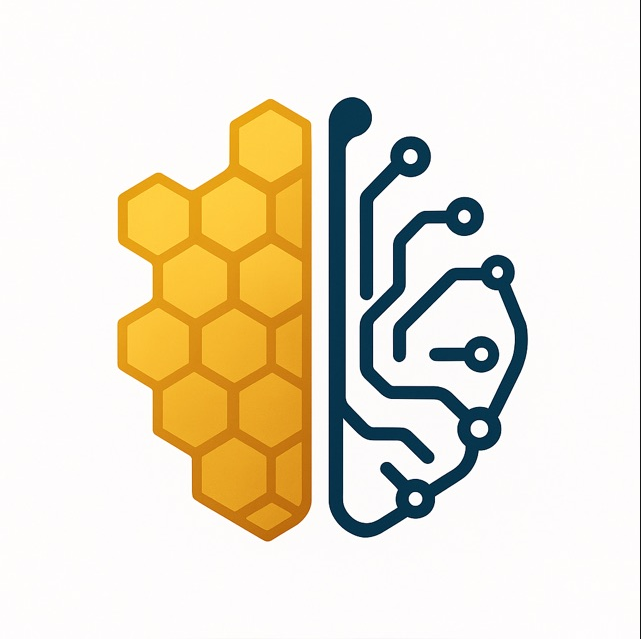

Bio Ionic Memristor for Neuromorphic Computing
Team 38 - Synaptica • AI in Electronics
Data sourced from existing literature
Abstract
Neuromorphic biomemristor
Overview
Memristive synapse for neuromorphic computing
Neuromorphic computing models brain-like processing by combining memory and computation in one element.
A memristor adjusts resistance based on past input, enabling synaptic plasticity.
Gelatin and honey act as ionic, low-power, eco-friendly materials for simple neuromorphic devices. AI hardware consumes high energy, creating scalability limits for future systems.
Global e-waste exceeds 50 million tonnes per year, demanding sustainable alternatives.
Bio-memristors offer low-cost, green hardware synapses for efficient neuromorphic computing.
Switching Performance
Key resistive switching metrics
Vset
SET threshold
Switching to low-resistance state
0.21 – 3.0 V
SET voltages range from ~0.21–0.23 V up to 0.6–3.0 V depending on stack and thickness.
Vreset
RESET threshold
Switching to high-resistance state
−0.04 – −3.0 V
RESET voltages span −0.04 V to −3.0 V, restoring the high-resistance state in gelatin-CNT, honey, and carbon-dot devices.
ON/OFF ratio
ION / IOFF
Dynamic resistance window
10² – 10⁶
ON/OFF ratios span 102–104 (gelatin/honey) and reach 106 (carbon-dot, honey-CNT).
Endurance
Switching cycles
Cycling stability of organic memristors
35 – 10⁶ cycles
Endurance ranges from ~35 cycles (gelatin-CNT) to >103 cycles (honey-CNT) and ~106 cycles (carbon-dot).
Retention
State stability
Non-volatile conductance retention
10⁴ – 10⁶ s
Retention is stable for ~104 s, extending to 105–106 s and multi-year extrapolated stability.
Device Physics
I–V analysis & mechanisms
Log(I) – Log(V)
Slope analysis
Extracted slopes from I–V characteristics
1.17 & 3.21
Low-bias slope is ~1.17 (ohmic), rising to ~3.21 in the trap-filled SCLC regime.
Conduction mechanism
Identified mode
Ohmic to trap-filled SCLC transition
Ohmic → TF-SCLC
Conduction transitions from ohmic (≈1) to SCLC (≈2) to trap-filled (>3).
Neuromorphic Metrics
Synaptic performance
PPF index
Short-term plasticity
Paired-pulse facilitation behaviour
≈ 370 %
Paired-pulse facilitation reaches ~370 % at Δt ≈ 20 ms with ms-scale decay constants.
Conductance states
Analog synapse
Multi-level honey memristor
256 levels
Honey synapses provide 256 conductance states for fine weight tuning.
NL LTP
Potentiation non-linearity
Long-term potentiation curve fit
+0.01
LTP non-linearity is NL-LTP ≈ +0.01 (near-linear potentiation).
NL LTD
Depression non-linearity
Long-term depression curve fit
−1.93
LTD non-linearity is NL-LTD ≈ −1.93 (strong non-linear depression).